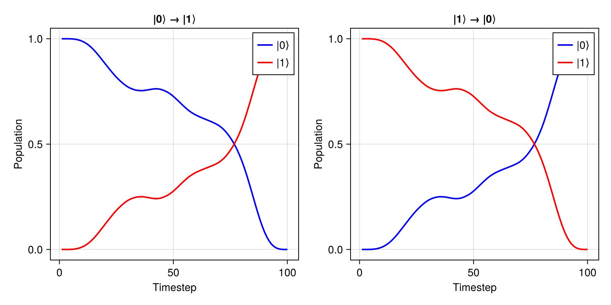

State Transfer
This tutorial covers state-to-state transfer using KetTrajectory. We'll prepare quantum states and implement gates via state mappings.
Overview
While UnitaryTrajectory optimizes for a full unitary gate, KetTrajectory optimizes for transferring a specific initial state to a target state. This is useful for:
- State preparation
- Gates where you only care about specific state mappings
- Problems where full unitary tracking is expensive
using Piccolo
using CairoMakie
using Random
Random.seed!(123)Random.TaskLocalRNG()Single State Transfer
Let's prepare the |1⟩ state starting from |0⟩.
Setup
# Create quantum system
H_drift = 0.5 * PAULIS[:Z]
H_drives = [PAULIS[:X], PAULIS[:Y]]
sys = QuantumSystem(H_drift, H_drives, [1.0, 1.0])
# Time parameters
T, N = 10.0, 100
times = collect(range(0, T, length = N))
# Initial pulse
pulse = ZeroOrderPulse(0.1 * randn(2, N), times)ZeroOrderPulse{DataInterpolations.ConstantInterpolation{Matrix{Float64}, Vector{Float64}, Vector{Union{}}, Float64}}(DataInterpolations.ConstantInterpolation{Matrix{Float64}, Vector{Float64}, Vector{Union{}}, Float64}([0.08082879284649669 -0.1104636102329296 … -0.0903138108555931 -0.005439189822271359; -0.11220725081141734 -0.04169926351649334 … -0.25366861548131786 -0.12173272493662057], [0.0, 0.10101010101010101, 0.20202020202020202, 0.30303030303030304, 0.40404040404040403, 0.5050505050505051, 0.6060606060606061, 0.7070707070707071, 0.8080808080808081, 0.9090909090909091 … 9.090909090909092, 9.191919191919192, 9.292929292929292, 9.393939393939394, 9.494949494949495, 9.595959595959595, 9.696969696969697, 9.797979797979798, 9.8989898989899, 10.0], Union{}[], nothing, :left, DataInterpolations.ExtrapolationType.None, DataInterpolations.ExtrapolationType.None, FindFirstFunctions.Guesser{Vector{Float64}}([0.0, 0.10101010101010101, 0.20202020202020202, 0.30303030303030304, 0.40404040404040403, 0.5050505050505051, 0.6060606060606061, 0.7070707070707071, 0.8080808080808081, 0.9090909090909091 … 9.090909090909092, 9.191919191919192, 9.292929292929292, 9.393939393939394, 9.494949494949495, 9.595959595959595, 9.696969696969697, 9.797979797979798, 9.8989898989899, 10.0], Base.RefValue{Int64}(1), true), false, true), 10.0, 2, :u, [0.0, 0.0], [0.0, 0.0])Define State Transfer
# Initial state: |0⟩
ψ_init = ComplexF64[1.0, 0.0]
# Target state: |1⟩
ψ_goal = ComplexF64[0.0, 1.0]
# Create KetTrajectory
qtraj = KetTrajectory(sys, pulse, ψ_init, ψ_goal)KetTrajectory{ZeroOrderPulse{DataInterpolations.ConstantInterpolation{Matrix{Float64}, Vector{Float64}, Vector{Union{}}, Float64}}, SciMLBase.ODESolution{ComplexF64, 2, Vector{Vector{ComplexF64}}, Nothing, Nothing, Vector{Float64}, Vector{Vector{Vector{ComplexF64}}}, Nothing, SciMLBase.ODEProblem{Vector{ComplexF64}, Tuple{Float64, Float64}, true, SciMLBase.NullParameters, SciMLBase.ODEFunction{true, SciMLBase.FullSpecialize, SciMLOperators.MatrixOperator{ComplexF64, Matrix{ComplexF64}, SciMLOperators.FilterKwargs{Nothing, Val{()}}, SciMLOperators.FilterKwargs{Piccolo.Quantum.Rollouts.var"#update!#_construct_operator##2"{QuantumSystem{Piccolo.Quantum.QuantumSystems.var"#26#27"{SparseArrays.SparseMatrixCSC{ComplexF64, Int64}, Vector{SparseArrays.SparseMatrixCSC{ComplexF64, Int64}}, Int64}, Piccolo.Quantum.QuantumSystems.var"#28#29"{Vector{SparseArrays.SparseMatrixCSC{Float64, Int64}}, Int64, SparseArrays.SparseMatrixCSC{Float64, Int64}}, @NamedTuple{}}}, Val{()}}}, LinearAlgebra.UniformScaling{Bool}, Nothing, Nothing, Nothing, Nothing, Nothing, Nothing, Nothing, Nothing, Nothing, Nothing, Nothing, typeof(SciMLBase.DEFAULT_OBSERVED), Nothing, Piccolo.Quantum.Rollouts.PiccoloRolloutSystem{Union{Int64, AbstractVector{Int64}, CartesianIndex, CartesianIndices}}, Nothing, Nothing}, Base.Pairs{Symbol, Vector{Float64}, Nothing, @NamedTuple{tstops::Vector{Float64}, saveat::Vector{Float64}}}, SciMLBase.StandardODEProblem}, OrdinaryDiffEqLinear.MagnusGL4, OrdinaryDiffEqCore.InterpolationData{SciMLBase.ODEFunction{true, SciMLBase.FullSpecialize, SciMLOperators.MatrixOperator{ComplexF64, Matrix{ComplexF64}, SciMLOperators.FilterKwargs{Nothing, Val{()}}, SciMLOperators.FilterKwargs{Piccolo.Quantum.Rollouts.var"#update!#_construct_operator##2"{QuantumSystem{Piccolo.Quantum.QuantumSystems.var"#26#27"{SparseArrays.SparseMatrixCSC{ComplexF64, Int64}, Vector{SparseArrays.SparseMatrixCSC{ComplexF64, Int64}}, Int64}, Piccolo.Quantum.QuantumSystems.var"#28#29"{Vector{SparseArrays.SparseMatrixCSC{Float64, Int64}}, Int64, SparseArrays.SparseMatrixCSC{Float64, Int64}}, @NamedTuple{}}}, Val{()}}}, LinearAlgebra.UniformScaling{Bool}, Nothing, Nothing, Nothing, Nothing, Nothing, Nothing, Nothing, Nothing, Nothing, Nothing, Nothing, typeof(SciMLBase.DEFAULT_OBSERVED), Nothing, Piccolo.Quantum.Rollouts.PiccoloRolloutSystem{Union{Int64, AbstractVector{Int64}, CartesianIndex, CartesianIndices}}, Nothing, Nothing}, Vector{Vector{ComplexF64}}, Vector{Float64}, Vector{Vector{Vector{ComplexF64}}}, Nothing, OrdinaryDiffEqLinear.MagnusGL4Cache{Vector{ComplexF64}, Vector{ComplexF64}, Matrix{ComplexF64}, Nothing}, Nothing}, SciMLBase.DEStats, Nothing, Nothing, Nothing, Nothing}}(QuantumSystem: levels = 2, n_drives = 2, ZeroOrderPulse{DataInterpolations.ConstantInterpolation{Matrix{Float64}, Vector{Float64}, Vector{Union{}}, Float64}}(DataInterpolations.ConstantInterpolation{Matrix{Float64}, Vector{Float64}, Vector{Union{}}, Float64}([0.08082879284649669 -0.1104636102329296 … -0.0903138108555931 -0.005439189822271359; -0.11220725081141734 -0.04169926351649334 … -0.25366861548131786 -0.12173272493662057], [0.0, 0.10101010101010101, 0.20202020202020202, 0.30303030303030304, 0.40404040404040403, 0.5050505050505051, 0.6060606060606061, 0.7070707070707071, 0.8080808080808081, 0.9090909090909091 … 9.090909090909092, 9.191919191919192, 9.292929292929292, 9.393939393939394, 9.494949494949495, 9.595959595959595, 9.696969696969697, 9.797979797979798, 9.8989898989899, 10.0], Union{}[], nothing, :left, DataInterpolations.ExtrapolationType.None, DataInterpolations.ExtrapolationType.None, FindFirstFunctions.Guesser{Vector{Float64}}([0.0, 0.10101010101010101, 0.20202020202020202, 0.30303030303030304, 0.40404040404040403, 0.5050505050505051, 0.6060606060606061, 0.7070707070707071, 0.8080808080808081, 0.9090909090909091 … 9.090909090909092, 9.191919191919192, 9.292929292929292, 9.393939393939394, 9.494949494949495, 9.595959595959595, 9.696969696969697, 9.797979797979798, 9.8989898989899, 10.0], Base.RefValue{Int64}(100), true), false, true), 10.0, 2, :u, [0.0, 0.0], [0.0, 0.0]), ComplexF64[1.0 + 0.0im, 0.0 + 0.0im], ComplexF64[0.0 + 0.0im, 1.0 + 0.0im], SciMLBase.ODESolution{ComplexF64, 2, Vector{Vector{ComplexF64}}, Nothing, Nothing, Vector{Float64}, Vector{Vector{Vector{ComplexF64}}}, Nothing, SciMLBase.ODEProblem{Vector{ComplexF64}, Tuple{Float64, Float64}, true, SciMLBase.NullParameters, SciMLBase.ODEFunction{true, SciMLBase.FullSpecialize, SciMLOperators.MatrixOperator{ComplexF64, Matrix{ComplexF64}, SciMLOperators.FilterKwargs{Nothing, Val{()}}, SciMLOperators.FilterKwargs{Piccolo.Quantum.Rollouts.var"#update!#_construct_operator##2"{QuantumSystem{Piccolo.Quantum.QuantumSystems.var"#26#27"{SparseArrays.SparseMatrixCSC{ComplexF64, Int64}, Vector{SparseArrays.SparseMatrixCSC{ComplexF64, Int64}}, Int64}, Piccolo.Quantum.QuantumSystems.var"#28#29"{Vector{SparseArrays.SparseMatrixCSC{Float64, Int64}}, Int64, SparseArrays.SparseMatrixCSC{Float64, Int64}}, @NamedTuple{}}}, Val{()}}}, LinearAlgebra.UniformScaling{Bool}, Nothing, Nothing, Nothing, Nothing, Nothing, Nothing, Nothing, Nothing, Nothing, Nothing, Nothing, typeof(SciMLBase.DEFAULT_OBSERVED), Nothing, Piccolo.Quantum.Rollouts.PiccoloRolloutSystem{Union{Int64, AbstractVector{Int64}, CartesianIndex, CartesianIndices}}, Nothing, Nothing}, Base.Pairs{Symbol, Vector{Float64}, Nothing, @NamedTuple{tstops::Vector{Float64}, saveat::Vector{Float64}}}, SciMLBase.StandardODEProblem}, OrdinaryDiffEqLinear.MagnusGL4, OrdinaryDiffEqCore.InterpolationData{SciMLBase.ODEFunction{true, SciMLBase.FullSpecialize, SciMLOperators.MatrixOperator{ComplexF64, Matrix{ComplexF64}, SciMLOperators.FilterKwargs{Nothing, Val{()}}, SciMLOperators.FilterKwargs{Piccolo.Quantum.Rollouts.var"#update!#_construct_operator##2"{QuantumSystem{Piccolo.Quantum.QuantumSystems.var"#26#27"{SparseArrays.SparseMatrixCSC{ComplexF64, Int64}, Vector{SparseArrays.SparseMatrixCSC{ComplexF64, Int64}}, Int64}, Piccolo.Quantum.QuantumSystems.var"#28#29"{Vector{SparseArrays.SparseMatrixCSC{Float64, Int64}}, Int64, SparseArrays.SparseMatrixCSC{Float64, Int64}}, @NamedTuple{}}}, Val{()}}}, LinearAlgebra.UniformScaling{Bool}, Nothing, Nothing, Nothing, Nothing, Nothing, Nothing, Nothing, Nothing, Nothing, Nothing, Nothing, typeof(SciMLBase.DEFAULT_OBSERVED), Nothing, Piccolo.Quantum.Rollouts.PiccoloRolloutSystem{Union{Int64, AbstractVector{Int64}, CartesianIndex, CartesianIndices}}, Nothing, Nothing}, Vector{Vector{ComplexF64}}, Vector{Float64}, Vector{Vector{Vector{ComplexF64}}}, Nothing, OrdinaryDiffEqLinear.MagnusGL4Cache{Vector{ComplexF64}, Vector{ComplexF64}, Matrix{ComplexF64}, Nothing}, Nothing}, SciMLBase.DEStats, Nothing, Nothing, Nothing, Nothing}(Vector{ComplexF64}[[1.0 + 0.0im, 0.0 + 0.0im], [0.9986546829501519 - 0.04997757603754927im, -0.011215692818783946 - 0.008079254281018215im], [0.9948817224146654 - 0.09997991960253524im, -0.014407766939490132 + 0.0026058268009584926im], [0.9886753273898242 - 0.14954211173654797im, -0.01252184345074768 - 0.0012071721472119653im], [0.979701830628622 - 0.19882081713108077im, -0.02521052008929977 + 0.004362959440942701im], [0.968513115893346 - 0.24751420629530677im, -0.026684023202484704 + 0.002650458506752494im], [0.9549668114739006 - 0.2952721892330174im, -0.026961943367897857 - 0.011215028254069283im], [0.9390997213698729 - 0.34260304596043933im, -0.02326082241239627 - 0.013183336541104117im], [0.920625994482328 - 0.3896324147879556im, -0.023516412145337916 + 0.009018757660709215im], [0.9001206201850012 - 0.4349704743387303im, -0.024118563392080107 - 0.0013603202607412497im] … [-0.16777529020352 + 0.9795356763167755im, -0.09670622687629121 + 0.054856326008122125im], [-0.1209518216113305 + 0.9864749205124611im, -0.10649452016920284 + 0.02994670637585651im], [-0.07212116021519202 + 0.9902411115535918im, -0.11750427222057234 + 0.02034269520568484im], [-0.022752429705326087 + 0.9934707640314453im, -0.1111563010207807 + 0.011935019926840987im], [0.027193944381478825 + 0.9923644060481954im, -0.11993532420827449 + 0.009428308684016617im], [0.0769775694128006 + 0.9900303776186271im, -0.11785312678914334 + 0.004994567612320037im], [0.12472102601395635 + 0.9878334779852336im, -0.09120634821449619 - 0.017637672380313746im], [0.17337612253444787 + 0.9802723233248158im, -0.09062148220258802 - 0.02818934588971197im], [0.22105668085319224 + 0.9697093680151048im, -0.09380604545906071 - 0.04470023791038149im], [0.26718493103113805 + 0.9551191785348199im, -0.10577861990312436 - 0.0719058481365939im]], nothing, nothing, [0.0, 0.1, 0.2, 0.3, 0.4, 0.5, 0.6, 0.7, 0.8, 0.9 … 9.1, 9.2, 9.3, 9.4, 9.5, 9.6, 9.7, 9.8, 9.9, 10.0], Vector{Vector{ComplexF64}}[[[1.0 + 0.0im, 0.0 + 0.0im]]], nothing, SciMLBase.ODEProblem{Vector{ComplexF64}, Tuple{Float64, Float64}, true, SciMLBase.NullParameters, SciMLBase.ODEFunction{true, SciMLBase.FullSpecialize, SciMLOperators.MatrixOperator{ComplexF64, Matrix{ComplexF64}, SciMLOperators.FilterKwargs{Nothing, Val{()}}, SciMLOperators.FilterKwargs{Piccolo.Quantum.Rollouts.var"#update!#_construct_operator##2"{QuantumSystem{Piccolo.Quantum.QuantumSystems.var"#26#27"{SparseArrays.SparseMatrixCSC{ComplexF64, Int64}, Vector{SparseArrays.SparseMatrixCSC{ComplexF64, Int64}}, Int64}, Piccolo.Quantum.QuantumSystems.var"#28#29"{Vector{SparseArrays.SparseMatrixCSC{Float64, Int64}}, Int64, SparseArrays.SparseMatrixCSC{Float64, Int64}}, @NamedTuple{}}}, Val{()}}}, LinearAlgebra.UniformScaling{Bool}, Nothing, Nothing, Nothing, Nothing, Nothing, Nothing, Nothing, Nothing, Nothing, Nothing, Nothing, typeof(SciMLBase.DEFAULT_OBSERVED), Nothing, Piccolo.Quantum.Rollouts.PiccoloRolloutSystem{Union{Int64, AbstractVector{Int64}, CartesianIndex, CartesianIndices}}, Nothing, Nothing}, Base.Pairs{Symbol, Vector{Float64}, Nothing, @NamedTuple{tstops::Vector{Float64}, saveat::Vector{Float64}}}, SciMLBase.StandardODEProblem}(SciMLBase.ODEFunction{true, SciMLBase.FullSpecialize, SciMLOperators.MatrixOperator{ComplexF64, Matrix{ComplexF64}, SciMLOperators.FilterKwargs{Nothing, Val{()}}, SciMLOperators.FilterKwargs{Piccolo.Quantum.Rollouts.var"#update!#_construct_operator##2"{QuantumSystem{Piccolo.Quantum.QuantumSystems.var"#26#27"{SparseArrays.SparseMatrixCSC{ComplexF64, Int64}, Vector{SparseArrays.SparseMatrixCSC{ComplexF64, Int64}}, Int64}, Piccolo.Quantum.QuantumSystems.var"#28#29"{Vector{SparseArrays.SparseMatrixCSC{Float64, Int64}}, Int64, SparseArrays.SparseMatrixCSC{Float64, Int64}}, @NamedTuple{}}}, Val{()}}}, LinearAlgebra.UniformScaling{Bool}, Nothing, Nothing, Nothing, Nothing, Nothing, Nothing, Nothing, Nothing, Nothing, Nothing, Nothing, typeof(SciMLBase.DEFAULT_OBSERVED), Nothing, Piccolo.Quantum.Rollouts.PiccoloRolloutSystem{Union{Int64, AbstractVector{Int64}, CartesianIndex, CartesianIndices}}, Nothing, Nothing}(MatrixOperator(2 × 2), LinearAlgebra.UniformScaling{Bool}(true), nothing, nothing, nothing, nothing, nothing, nothing, nothing, nothing, nothing, nothing, nothing, SciMLBase.DEFAULT_OBSERVED, nothing, Piccolo.Quantum.Rollouts.PiccoloRolloutSystem{Union{Int64, AbstractVector{Int64}, CartesianIndex, CartesianIndices}}(Dict{Symbol, Union{Int64, AbstractVector{Int64}, CartesianIndex, CartesianIndices}}(:ψ_2 => 2, :ψ_1 => 1, :ψ => 1:2), :t, Dict{Symbol, Float64}()), nothing, nothing), ComplexF64[1.0 + 0.0im, 0.0 + 0.0im], (0.0, 10.0), SciMLBase.NullParameters(), Base.Pairs(:tstops => [0.0, 0.1, 0.2, 0.3, 0.4, 0.5, 0.6, 0.7, 0.8, 0.9 … 9.1, 9.2, 9.3, 9.4, 9.5, 9.6, 9.7, 9.8, 9.9, 10.0], :saveat => [0.0, 0.1, 0.2, 0.3, 0.4, 0.5, 0.6, 0.7, 0.8, 0.9 … 9.1, 9.2, 9.3, 9.4, 9.5, 9.6, 9.7, 9.8, 9.9, 10.0]), SciMLBase.StandardODEProblem()), OrdinaryDiffEqLinear.MagnusGL4(false, 30, 0), OrdinaryDiffEqCore.InterpolationData{SciMLBase.ODEFunction{true, SciMLBase.FullSpecialize, SciMLOperators.MatrixOperator{ComplexF64, Matrix{ComplexF64}, SciMLOperators.FilterKwargs{Nothing, Val{()}}, SciMLOperators.FilterKwargs{Piccolo.Quantum.Rollouts.var"#update!#_construct_operator##2"{QuantumSystem{Piccolo.Quantum.QuantumSystems.var"#26#27"{SparseArrays.SparseMatrixCSC{ComplexF64, Int64}, Vector{SparseArrays.SparseMatrixCSC{ComplexF64, Int64}}, Int64}, Piccolo.Quantum.QuantumSystems.var"#28#29"{Vector{SparseArrays.SparseMatrixCSC{Float64, Int64}}, Int64, SparseArrays.SparseMatrixCSC{Float64, Int64}}, @NamedTuple{}}}, Val{()}}}, LinearAlgebra.UniformScaling{Bool}, Nothing, Nothing, Nothing, Nothing, Nothing, Nothing, Nothing, Nothing, Nothing, Nothing, Nothing, typeof(SciMLBase.DEFAULT_OBSERVED), Nothing, Piccolo.Quantum.Rollouts.PiccoloRolloutSystem{Union{Int64, AbstractVector{Int64}, CartesianIndex, CartesianIndices}}, Nothing, Nothing}, Vector{Vector{ComplexF64}}, Vector{Float64}, Vector{Vector{Vector{ComplexF64}}}, Nothing, OrdinaryDiffEqLinear.MagnusGL4Cache{Vector{ComplexF64}, Vector{ComplexF64}, Matrix{ComplexF64}, Nothing}, Nothing}(SciMLBase.ODEFunction{true, SciMLBase.FullSpecialize, SciMLOperators.MatrixOperator{ComplexF64, Matrix{ComplexF64}, SciMLOperators.FilterKwargs{Nothing, Val{()}}, SciMLOperators.FilterKwargs{Piccolo.Quantum.Rollouts.var"#update!#_construct_operator##2"{QuantumSystem{Piccolo.Quantum.QuantumSystems.var"#26#27"{SparseArrays.SparseMatrixCSC{ComplexF64, Int64}, Vector{SparseArrays.SparseMatrixCSC{ComplexF64, Int64}}, Int64}, Piccolo.Quantum.QuantumSystems.var"#28#29"{Vector{SparseArrays.SparseMatrixCSC{Float64, Int64}}, Int64, SparseArrays.SparseMatrixCSC{Float64, Int64}}, @NamedTuple{}}}, Val{()}}}, LinearAlgebra.UniformScaling{Bool}, Nothing, Nothing, Nothing, Nothing, Nothing, Nothing, Nothing, Nothing, Nothing, Nothing, Nothing, typeof(SciMLBase.DEFAULT_OBSERVED), Nothing, Piccolo.Quantum.Rollouts.PiccoloRolloutSystem{Union{Int64, AbstractVector{Int64}, CartesianIndex, CartesianIndices}}, Nothing, Nothing}(MatrixOperator(2 × 2), LinearAlgebra.UniformScaling{Bool}(true), nothing, nothing, nothing, nothing, nothing, nothing, nothing, nothing, nothing, nothing, nothing, SciMLBase.DEFAULT_OBSERVED, nothing, Piccolo.Quantum.Rollouts.PiccoloRolloutSystem{Union{Int64, AbstractVector{Int64}, CartesianIndex, CartesianIndices}}(Dict{Symbol, Union{Int64, AbstractVector{Int64}, CartesianIndex, CartesianIndices}}(:ψ_2 => 2, :ψ_1 => 1, :ψ => 1:2), :t, Dict{Symbol, Float64}()), nothing, nothing), Vector{ComplexF64}[[1.0 + 0.0im, 0.0 + 0.0im], [0.9986546829501519 - 0.04997757603754927im, -0.011215692818783946 - 0.008079254281018215im], [0.9948817224146654 - 0.09997991960253524im, -0.014407766939490132 + 0.0026058268009584926im], [0.9886753273898242 - 0.14954211173654797im, -0.01252184345074768 - 0.0012071721472119653im], [0.979701830628622 - 0.19882081713108077im, -0.02521052008929977 + 0.004362959440942701im], [0.968513115893346 - 0.24751420629530677im, -0.026684023202484704 + 0.002650458506752494im], [0.9549668114739006 - 0.2952721892330174im, -0.026961943367897857 - 0.011215028254069283im], [0.9390997213698729 - 0.34260304596043933im, -0.02326082241239627 - 0.013183336541104117im], [0.920625994482328 - 0.3896324147879556im, -0.023516412145337916 + 0.009018757660709215im], [0.9001206201850012 - 0.4349704743387303im, -0.024118563392080107 - 0.0013603202607412497im] … [-0.16777529020352 + 0.9795356763167755im, -0.09670622687629121 + 0.054856326008122125im], [-0.1209518216113305 + 0.9864749205124611im, -0.10649452016920284 + 0.02994670637585651im], [-0.07212116021519202 + 0.9902411115535918im, -0.11750427222057234 + 0.02034269520568484im], [-0.022752429705326087 + 0.9934707640314453im, -0.1111563010207807 + 0.011935019926840987im], [0.027193944381478825 + 0.9923644060481954im, -0.11993532420827449 + 0.009428308684016617im], [0.0769775694128006 + 0.9900303776186271im, -0.11785312678914334 + 0.004994567612320037im], [0.12472102601395635 + 0.9878334779852336im, -0.09120634821449619 - 0.017637672380313746im], [0.17337612253444787 + 0.9802723233248158im, -0.09062148220258802 - 0.02818934588971197im], [0.22105668085319224 + 0.9697093680151048im, -0.09380604545906071 - 0.04470023791038149im], [0.26718493103113805 + 0.9551191785348199im, -0.10577861990312436 - 0.0719058481365939im]], [0.0, 0.1, 0.2, 0.3, 0.4, 0.5, 0.6, 0.7, 0.8, 0.9 … 9.1, 9.2, 9.3, 9.4, 9.5, 9.6, 9.7, 9.8, 9.9, 10.0], Vector{Vector{ComplexF64}}[[[1.0 + 0.0im, 0.0 + 0.0im]]], nothing, false, OrdinaryDiffEqLinear.MagnusGL4Cache{Vector{ComplexF64}, Vector{ComplexF64}, Matrix{ComplexF64}, Nothing}(ComplexF64[0.26718493103113805 + 0.9551191785348199im, -0.10577861990312436 - 0.0719058481365939im], ComplexF64[0.22105668085319224 + 0.9697093680151048im, -0.09380604545906071 - 0.04470023791038149im], ComplexF64[0.22105668085319224 + 0.9697093680151048im, -0.09380604545906071 - 0.04470023791038149im], ComplexF64[0.0 + 0.0im, 0.0 + 0.0im], ComplexF64[0.4650960831640131 - 0.1303393693357089im, -0.12130317166754696 - 0.2729233842702453im], ComplexF64[0.0 + 0.0im 0.0 + 0.0im; 0.0 + 0.0im 0.0 + 0.0im], ComplexF64[0.4650739791839139 - 0.1429211103409064im, -0.0017673001630692936 - 0.16770530063630357im], nothing), nothing, false), false, 0, SciMLBase.DEStats(101, 0, 0, 0, 0, 0, 0, 0, 0, 0, 100, 0, 0.0), nothing, SciMLBase.ReturnCode.Success, nothing, nothing, nothing))Solve
qcp = SmoothPulseProblem(qtraj, N; Q = 100.0, R = 1e-2)
cached_solve!(qcp, "state_transfer_single"; max_iter = 20, verbose = false, print_level = 1)
fidelity(qcp)0.9676163099470618Visualize State Evolution
traj = get_trajectory(qcp)
# Convert isomorphic states to physical states
n_steps = size(traj[:ψ̃], 2)
populations = zeros(2, n_steps)
for k = 1:n_steps
ψ = iso_to_ket(traj[:ψ̃][:, k])
populations[:, k] = abs2.(ψ)
end
# Plot
fig = Figure(size = (800, 400))
ax1 = Axis(fig[1, 1], xlabel = "Timestep", ylabel = "Population", title = "State Evolution")
lines!(ax1, 1:n_steps, populations[1, :], label = "|0⟩", linewidth = 2)
lines!(ax1, 1:n_steps, populations[2, :], label = "|1⟩", linewidth = 2)
axislegend(ax1, position = :rt)
fig
Multi-State Transfer (Gate via States)
We can define a gate by specifying how it maps multiple states. MultiKetTrajectory optimizes all mappings simultaneously with coherent phases.
Define X Gate via State Mappings
The X gate maps:
- |0⟩ → |1⟩
- |1⟩ → |0⟩
# Basis states
ψ0 = ComplexF64[1.0, 0.0] # |0⟩
ψ1 = ComplexF64[0.0, 1.0] # |1⟩
# Initial states and their targets
initial_states = [ψ0, ψ1]
goal_states = [ψ1, ψ0] # X gate swaps them
# Create new pulse for this problem
pulse_multi = ZeroOrderPulse(0.1 * randn(2, N), times)
# Create MultiKetTrajectory
qtraj_multi = MultiKetTrajectory(sys, pulse_multi, initial_states, goal_states)MultiKetTrajectory{ZeroOrderPulse{DataInterpolations.ConstantInterpolation{Matrix{Float64}, Vector{Float64}, Vector{Union{}}, Float64}}, SciMLBase.EnsembleSolution{ComplexF64, 3, Vector{SciMLBase.ODESolution{ComplexF64, 2, Vector{Vector{ComplexF64}}, Nothing, Nothing, Vector{Float64}, Vector{Vector{Vector{ComplexF64}}}, Nothing, SciMLBase.ODEProblem{Vector{ComplexF64}, Tuple{Float64, Float64}, true, SciMLBase.NullParameters, SciMLBase.ODEFunction{true, SciMLBase.FullSpecialize, SciMLOperators.MatrixOperator{ComplexF64, Matrix{ComplexF64}, SciMLOperators.FilterKwargs{Nothing, Val{()}}, SciMLOperators.FilterKwargs{Piccolo.Quantum.Rollouts.var"#update!#_construct_operator##2"{QuantumSystem{Piccolo.Quantum.QuantumSystems.var"#26#27"{SparseArrays.SparseMatrixCSC{ComplexF64, Int64}, Vector{SparseArrays.SparseMatrixCSC{ComplexF64, Int64}}, Int64}, Piccolo.Quantum.QuantumSystems.var"#28#29"{Vector{SparseArrays.SparseMatrixCSC{Float64, Int64}}, Int64, SparseArrays.SparseMatrixCSC{Float64, Int64}}, @NamedTuple{}}}, Val{()}}}, LinearAlgebra.UniformScaling{Bool}, Nothing, Nothing, Nothing, Nothing, Nothing, Nothing, Nothing, Nothing, Nothing, Nothing, Nothing, typeof(SciMLBase.DEFAULT_OBSERVED), Nothing, Piccolo.Quantum.Rollouts.PiccoloRolloutSystem{Union{Int64, AbstractVector{Int64}, CartesianIndex, CartesianIndices}}, Nothing, Nothing}, Base.Pairs{Symbol, Vector{Float64}, Nothing, @NamedTuple{tstops::Vector{Float64}, saveat::Vector{Float64}}}, SciMLBase.StandardODEProblem}, OrdinaryDiffEqLinear.MagnusGL4, OrdinaryDiffEqCore.InterpolationData{SciMLBase.ODEFunction{true, SciMLBase.FullSpecialize, SciMLOperators.MatrixOperator{ComplexF64, Matrix{ComplexF64}, SciMLOperators.FilterKwargs{Nothing, Val{()}}, SciMLOperators.FilterKwargs{Piccolo.Quantum.Rollouts.var"#update!#_construct_operator##2"{QuantumSystem{Piccolo.Quantum.QuantumSystems.var"#26#27"{SparseArrays.SparseMatrixCSC{ComplexF64, Int64}, Vector{SparseArrays.SparseMatrixCSC{ComplexF64, Int64}}, Int64}, Piccolo.Quantum.QuantumSystems.var"#28#29"{Vector{SparseArrays.SparseMatrixCSC{Float64, Int64}}, Int64, SparseArrays.SparseMatrixCSC{Float64, Int64}}, @NamedTuple{}}}, Val{()}}}, LinearAlgebra.UniformScaling{Bool}, Nothing, Nothing, Nothing, Nothing, Nothing, Nothing, Nothing, Nothing, Nothing, Nothing, Nothing, typeof(SciMLBase.DEFAULT_OBSERVED), Nothing, Piccolo.Quantum.Rollouts.PiccoloRolloutSystem{Union{Int64, AbstractVector{Int64}, CartesianIndex, CartesianIndices}}, Nothing, Nothing}, Vector{Vector{ComplexF64}}, Vector{Float64}, Vector{Vector{Vector{ComplexF64}}}, Nothing, OrdinaryDiffEqLinear.MagnusGL4Cache{Vector{ComplexF64}, Vector{ComplexF64}, Matrix{ComplexF64}, Nothing}, Nothing}, SciMLBase.DEStats, Nothing, Nothing, Nothing, Nothing}}}}(QuantumSystem: levels = 2, n_drives = 2, ZeroOrderPulse{DataInterpolations.ConstantInterpolation{Matrix{Float64}, Vector{Float64}, Vector{Union{}}, Float64}}(DataInterpolations.ConstantInterpolation{Matrix{Float64}, Vector{Float64}, Vector{Union{}}, Float64}([-0.03072997123363109 -0.08755356180895857 … 0.039510066969572315 -0.11291451236645576; 0.2557637875100245 -0.07470397661634814 … -0.014830024040114895 -0.08569073125531322], [0.0, 0.10101010101010101, 0.20202020202020202, 0.30303030303030304, 0.40404040404040403, 0.5050505050505051, 0.6060606060606061, 0.7070707070707071, 0.8080808080808081, 0.9090909090909091 … 9.090909090909092, 9.191919191919192, 9.292929292929292, 9.393939393939394, 9.494949494949495, 9.595959595959595, 9.696969696969697, 9.797979797979798, 9.8989898989899, 10.0], Union{}[], nothing, :left, DataInterpolations.ExtrapolationType.None, DataInterpolations.ExtrapolationType.None, FindFirstFunctions.Guesser{Vector{Float64}}([0.0, 0.10101010101010101, 0.20202020202020202, 0.30303030303030304, 0.40404040404040403, 0.5050505050505051, 0.6060606060606061, 0.7070707070707071, 0.8080808080808081, 0.9090909090909091 … 9.090909090909092, 9.191919191919192, 9.292929292929292, 9.393939393939394, 9.494949494949495, 9.595959595959595, 9.696969696969697, 9.797979797979798, 9.8989898989899, 10.0], Base.RefValue{Int64}(1), true), false, true), 10.0, 2, :u, [0.0, 0.0], [0.0, 0.0]), Vector{ComplexF64}[[1.0 + 0.0im, 0.0 + 0.0im], [0.0 + 0.0im, 1.0 + 0.0im]], Vector{ComplexF64}[[0.0 + 0.0im, 1.0 + 0.0im], [1.0 + 0.0im, 0.0 + 0.0im]], [0.5, 0.5], SciMLBase.EnsembleSolution{ComplexF64, 3, Vector{SciMLBase.ODESolution{ComplexF64, 2, Vector{Vector{ComplexF64}}, Nothing, Nothing, Vector{Float64}, Vector{Vector{Vector{ComplexF64}}}, Nothing, SciMLBase.ODEProblem{Vector{ComplexF64}, Tuple{Float64, Float64}, true, SciMLBase.NullParameters, SciMLBase.ODEFunction{true, SciMLBase.FullSpecialize, SciMLOperators.MatrixOperator{ComplexF64, Matrix{ComplexF64}, SciMLOperators.FilterKwargs{Nothing, Val{()}}, SciMLOperators.FilterKwargs{Piccolo.Quantum.Rollouts.var"#update!#_construct_operator##2"{QuantumSystem{Piccolo.Quantum.QuantumSystems.var"#26#27"{SparseArrays.SparseMatrixCSC{ComplexF64, Int64}, Vector{SparseArrays.SparseMatrixCSC{ComplexF64, Int64}}, Int64}, Piccolo.Quantum.QuantumSystems.var"#28#29"{Vector{SparseArrays.SparseMatrixCSC{Float64, Int64}}, Int64, SparseArrays.SparseMatrixCSC{Float64, Int64}}, @NamedTuple{}}}, Val{()}}}, LinearAlgebra.UniformScaling{Bool}, Nothing, Nothing, Nothing, Nothing, Nothing, Nothing, Nothing, Nothing, Nothing, Nothing, Nothing, typeof(SciMLBase.DEFAULT_OBSERVED), Nothing, Piccolo.Quantum.Rollouts.PiccoloRolloutSystem{Union{Int64, AbstractVector{Int64}, CartesianIndex, CartesianIndices}}, Nothing, Nothing}, Base.Pairs{Symbol, Vector{Float64}, Nothing, @NamedTuple{tstops::Vector{Float64}, saveat::Vector{Float64}}}, SciMLBase.StandardODEProblem}, OrdinaryDiffEqLinear.MagnusGL4, OrdinaryDiffEqCore.InterpolationData{SciMLBase.ODEFunction{true, SciMLBase.FullSpecialize, SciMLOperators.MatrixOperator{ComplexF64, Matrix{ComplexF64}, SciMLOperators.FilterKwargs{Nothing, Val{()}}, SciMLOperators.FilterKwargs{Piccolo.Quantum.Rollouts.var"#update!#_construct_operator##2"{QuantumSystem{Piccolo.Quantum.QuantumSystems.var"#26#27"{SparseArrays.SparseMatrixCSC{ComplexF64, Int64}, Vector{SparseArrays.SparseMatrixCSC{ComplexF64, Int64}}, Int64}, Piccolo.Quantum.QuantumSystems.var"#28#29"{Vector{SparseArrays.SparseMatrixCSC{Float64, Int64}}, Int64, SparseArrays.SparseMatrixCSC{Float64, Int64}}, @NamedTuple{}}}, Val{()}}}, LinearAlgebra.UniformScaling{Bool}, Nothing, Nothing, Nothing, Nothing, Nothing, Nothing, Nothing, Nothing, Nothing, Nothing, Nothing, typeof(SciMLBase.DEFAULT_OBSERVED), Nothing, Piccolo.Quantum.Rollouts.PiccoloRolloutSystem{Union{Int64, AbstractVector{Int64}, CartesianIndex, CartesianIndices}}, Nothing, Nothing}, Vector{Vector{ComplexF64}}, Vector{Float64}, Vector{Vector{Vector{ComplexF64}}}, Nothing, OrdinaryDiffEqLinear.MagnusGL4Cache{Vector{ComplexF64}, Vector{ComplexF64}, Matrix{ComplexF64}, Nothing}, Nothing}, SciMLBase.DEStats, Nothing, Nothing, Nothing, Nothing}}}(SciMLBase.ODESolution{ComplexF64, 2, Vector{Vector{ComplexF64}}, Nothing, Nothing, Vector{Float64}, Vector{Vector{Vector{ComplexF64}}}, Nothing, SciMLBase.ODEProblem{Vector{ComplexF64}, Tuple{Float64, Float64}, true, SciMLBase.NullParameters, SciMLBase.ODEFunction{true, SciMLBase.FullSpecialize, SciMLOperators.MatrixOperator{ComplexF64, Matrix{ComplexF64}, SciMLOperators.FilterKwargs{Nothing, Val{()}}, SciMLOperators.FilterKwargs{Piccolo.Quantum.Rollouts.var"#update!#_construct_operator##2"{QuantumSystem{Piccolo.Quantum.QuantumSystems.var"#26#27"{SparseArrays.SparseMatrixCSC{ComplexF64, Int64}, Vector{SparseArrays.SparseMatrixCSC{ComplexF64, Int64}}, Int64}, Piccolo.Quantum.QuantumSystems.var"#28#29"{Vector{SparseArrays.SparseMatrixCSC{Float64, Int64}}, Int64, SparseArrays.SparseMatrixCSC{Float64, Int64}}, @NamedTuple{}}}, Val{()}}}, LinearAlgebra.UniformScaling{Bool}, Nothing, Nothing, Nothing, Nothing, Nothing, Nothing, Nothing, Nothing, Nothing, Nothing, Nothing, typeof(SciMLBase.DEFAULT_OBSERVED), Nothing, Piccolo.Quantum.Rollouts.PiccoloRolloutSystem{Union{Int64, AbstractVector{Int64}, CartesianIndex, CartesianIndices}}, Nothing, Nothing}, Base.Pairs{Symbol, Vector{Float64}, Nothing, @NamedTuple{tstops::Vector{Float64}, saveat::Vector{Float64}}}, SciMLBase.StandardODEProblem}, OrdinaryDiffEqLinear.MagnusGL4, OrdinaryDiffEqCore.InterpolationData{SciMLBase.ODEFunction{true, SciMLBase.FullSpecialize, SciMLOperators.MatrixOperator{ComplexF64, Matrix{ComplexF64}, SciMLOperators.FilterKwargs{Nothing, Val{()}}, SciMLOperators.FilterKwargs{Piccolo.Quantum.Rollouts.var"#update!#_construct_operator##2"{QuantumSystem{Piccolo.Quantum.QuantumSystems.var"#26#27"{SparseArrays.SparseMatrixCSC{ComplexF64, Int64}, Vector{SparseArrays.SparseMatrixCSC{ComplexF64, Int64}}, Int64}, Piccolo.Quantum.QuantumSystems.var"#28#29"{Vector{SparseArrays.SparseMatrixCSC{Float64, Int64}}, Int64, SparseArrays.SparseMatrixCSC{Float64, Int64}}, @NamedTuple{}}}, Val{()}}}, LinearAlgebra.UniformScaling{Bool}, Nothing, Nothing, Nothing, Nothing, Nothing, Nothing, Nothing, Nothing, Nothing, Nothing, Nothing, typeof(SciMLBase.DEFAULT_OBSERVED), Nothing, Piccolo.Quantum.Rollouts.PiccoloRolloutSystem{Union{Int64, AbstractVector{Int64}, CartesianIndex, CartesianIndices}}, Nothing, Nothing}, Vector{Vector{ComplexF64}}, Vector{Float64}, Vector{Vector{Vector{ComplexF64}}}, Nothing, OrdinaryDiffEqLinear.MagnusGL4Cache{Vector{ComplexF64}, Vector{ComplexF64}, Matrix{ComplexF64}, Nothing}, Nothing}, SciMLBase.DEStats, Nothing, Nothing, Nothing, Nothing}[SciMLBase.ODESolution{ComplexF64, 2, Vector{Vector{ComplexF64}}, Nothing, Nothing, Vector{Float64}, Vector{Vector{Vector{ComplexF64}}}, Nothing, SciMLBase.ODEProblem{Vector{ComplexF64}, Tuple{Float64, Float64}, true, SciMLBase.NullParameters, SciMLBase.ODEFunction{true, SciMLBase.FullSpecialize, SciMLOperators.MatrixOperator{ComplexF64, Matrix{ComplexF64}, SciMLOperators.FilterKwargs{Nothing, Val{()}}, SciMLOperators.FilterKwargs{Piccolo.Quantum.Rollouts.var"#update!#_construct_operator##2"{QuantumSystem{Piccolo.Quantum.QuantumSystems.var"#26#27"{SparseArrays.SparseMatrixCSC{ComplexF64, Int64}, Vector{SparseArrays.SparseMatrixCSC{ComplexF64, Int64}}, Int64}, Piccolo.Quantum.QuantumSystems.var"#28#29"{Vector{SparseArrays.SparseMatrixCSC{Float64, Int64}}, Int64, SparseArrays.SparseMatrixCSC{Float64, Int64}}, @NamedTuple{}}}, Val{()}}}, LinearAlgebra.UniformScaling{Bool}, Nothing, Nothing, Nothing, Nothing, Nothing, Nothing, Nothing, Nothing, Nothing, Nothing, Nothing, typeof(SciMLBase.DEFAULT_OBSERVED), Nothing, Piccolo.Quantum.Rollouts.PiccoloRolloutSystem{Union{Int64, AbstractVector{Int64}, CartesianIndex, CartesianIndices}}, Nothing, Nothing}, Base.Pairs{Symbol, Vector{Float64}, Nothing, @NamedTuple{tstops::Vector{Float64}, saveat::Vector{Float64}}}, SciMLBase.StandardODEProblem}, OrdinaryDiffEqLinear.MagnusGL4, OrdinaryDiffEqCore.InterpolationData{SciMLBase.ODEFunction{true, SciMLBase.FullSpecialize, SciMLOperators.MatrixOperator{ComplexF64, Matrix{ComplexF64}, SciMLOperators.FilterKwargs{Nothing, Val{()}}, SciMLOperators.FilterKwargs{Piccolo.Quantum.Rollouts.var"#update!#_construct_operator##2"{QuantumSystem{Piccolo.Quantum.QuantumSystems.var"#26#27"{SparseArrays.SparseMatrixCSC{ComplexF64, Int64}, Vector{SparseArrays.SparseMatrixCSC{ComplexF64, Int64}}, Int64}, Piccolo.Quantum.QuantumSystems.var"#28#29"{Vector{SparseArrays.SparseMatrixCSC{Float64, Int64}}, Int64, SparseArrays.SparseMatrixCSC{Float64, Int64}}, @NamedTuple{}}}, Val{()}}}, LinearAlgebra.UniformScaling{Bool}, Nothing, Nothing, Nothing, Nothing, Nothing, Nothing, Nothing, Nothing, Nothing, Nothing, Nothing, typeof(SciMLBase.DEFAULT_OBSERVED), Nothing, Piccolo.Quantum.Rollouts.PiccoloRolloutSystem{Union{Int64, AbstractVector{Int64}, CartesianIndex, CartesianIndices}}, Nothing, Nothing}, Vector{Vector{ComplexF64}}, Vector{Float64}, Vector{Vector{Vector{ComplexF64}}}, Nothing, OrdinaryDiffEqLinear.MagnusGL4Cache{Vector{ComplexF64}, Vector{ComplexF64}, Matrix{ComplexF64}, Nothing}, Nothing}, SciMLBase.DEStats, Nothing, Nothing, Nothing, Nothing}(Vector{ComplexF64}[[1.0 + 0.0im, 0.0 + 0.0im], [0.9984186197391061 - 0.04997364088264557im, 0.02556289533562247 + 0.0030713770935270174im], [0.9947711740216023 - 0.09956026138305762im, 0.018357787479728712 + 0.013455754451879492im], [0.9884853063422339 - 0.1491165731078704im, 0.01918509865229864 + 0.01711662232353915im], [0.9797554727476577 - 0.1983793379426713im, 0.02055293076856174 + 0.017390484043394674im], [0.9687718435330985 - 0.24735581426771658im, 0.016500057347679255 + 0.004895348093797968im], [0.9551694279395969 - 0.29527039041264236im, 0.014397173484935761 + 0.016108440978352328im], [0.9390609239347516 - 0.34209463943190965im, -0.0005287411738604045 + 0.033698059937226986im], [0.9207095682700396 - 0.38833141680807254im, -0.008946539720945891 + 0.037584053039198866im], [0.9000665613661234 - 0.4341285104017658im, -0.0034953102010919354 + 0.0374219771458456im] … [-0.16170298209704287 + 0.9840353394651079im, -0.06339120641312881 - 0.03883492261097397im], [-0.11110596967408971 + 0.9908382864381041im, -0.07103866715717842 - 0.029128360745368974im], [-0.06159996248303468 + 0.9943977721743926im, -0.07659775325613953 - 0.038875435853553im], [-0.011872445014480017 + 0.9963211986137814im, -0.07339168031304107 - 0.04262364957394965im], [0.038377121130534694 + 0.9942437595028887im, -0.08687317759196697 - 0.04959429683307653im], [0.08792704335293774 + 0.9918368629588777im, -0.07693849877600026 - 0.05107778116947309im], [0.138247024854992 + 0.9869604102269192im, -0.07076591463461074 - 0.04229768420823357im], [0.18576639305973933 + 0.9790345256006836im, -0.05637305731101509 - 0.06167919666164331im], [0.23446766902108881 + 0.9687681672995321im, -0.050894156078824235 - 0.06263333847037866im], [0.282267837535592 + 0.9559385240334571im, -0.04422131238878204 - 0.06746022303793514im]], nothing, nothing, [0.0, 0.1, 0.2, 0.3, 0.4, 0.5, 0.6, 0.7, 0.8, 0.9 … 9.1, 9.2, 9.3, 9.4, 9.5, 9.6, 9.7, 9.8, 9.9, 10.0], Vector{Vector{ComplexF64}}[[[1.0 + 0.0im, 0.0 + 0.0im]]], nothing, SciMLBase.ODEProblem{Vector{ComplexF64}, Tuple{Float64, Float64}, true, SciMLBase.NullParameters, SciMLBase.ODEFunction{true, SciMLBase.FullSpecialize, SciMLOperators.MatrixOperator{ComplexF64, Matrix{ComplexF64}, SciMLOperators.FilterKwargs{Nothing, Val{()}}, SciMLOperators.FilterKwargs{Piccolo.Quantum.Rollouts.var"#update!#_construct_operator##2"{QuantumSystem{Piccolo.Quantum.QuantumSystems.var"#26#27"{SparseArrays.SparseMatrixCSC{ComplexF64, Int64}, Vector{SparseArrays.SparseMatrixCSC{ComplexF64, Int64}}, Int64}, Piccolo.Quantum.QuantumSystems.var"#28#29"{Vector{SparseArrays.SparseMatrixCSC{Float64, Int64}}, Int64, SparseArrays.SparseMatrixCSC{Float64, Int64}}, @NamedTuple{}}}, Val{()}}}, LinearAlgebra.UniformScaling{Bool}, Nothing, Nothing, Nothing, Nothing, Nothing, Nothing, Nothing, Nothing, Nothing, Nothing, Nothing, typeof(SciMLBase.DEFAULT_OBSERVED), Nothing, Piccolo.Quantum.Rollouts.PiccoloRolloutSystem{Union{Int64, AbstractVector{Int64}, CartesianIndex, CartesianIndices}}, Nothing, Nothing}, Base.Pairs{Symbol, Vector{Float64}, Nothing, @NamedTuple{tstops::Vector{Float64}, saveat::Vector{Float64}}}, SciMLBase.StandardODEProblem}(SciMLBase.ODEFunction{true, SciMLBase.FullSpecialize, SciMLOperators.MatrixOperator{ComplexF64, Matrix{ComplexF64}, SciMLOperators.FilterKwargs{Nothing, Val{()}}, SciMLOperators.FilterKwargs{Piccolo.Quantum.Rollouts.var"#update!#_construct_operator##2"{QuantumSystem{Piccolo.Quantum.QuantumSystems.var"#26#27"{SparseArrays.SparseMatrixCSC{ComplexF64, Int64}, Vector{SparseArrays.SparseMatrixCSC{ComplexF64, Int64}}, Int64}, Piccolo.Quantum.QuantumSystems.var"#28#29"{Vector{SparseArrays.SparseMatrixCSC{Float64, Int64}}, Int64, SparseArrays.SparseMatrixCSC{Float64, Int64}}, @NamedTuple{}}}, Val{()}}}, LinearAlgebra.UniformScaling{Bool}, Nothing, Nothing, Nothing, Nothing, Nothing, Nothing, Nothing, Nothing, Nothing, Nothing, Nothing, typeof(SciMLBase.DEFAULT_OBSERVED), Nothing, Piccolo.Quantum.Rollouts.PiccoloRolloutSystem{Union{Int64, AbstractVector{Int64}, CartesianIndex, CartesianIndices}}, Nothing, Nothing}(MatrixOperator(2 × 2), LinearAlgebra.UniformScaling{Bool}(true), nothing, nothing, nothing, nothing, nothing, nothing, nothing, nothing, nothing, nothing, nothing, SciMLBase.DEFAULT_OBSERVED, nothing, Piccolo.Quantum.Rollouts.PiccoloRolloutSystem{Union{Int64, AbstractVector{Int64}, CartesianIndex, CartesianIndices}}(Dict{Symbol, Union{Int64, AbstractVector{Int64}, CartesianIndex, CartesianIndices}}(:ψ_2 => 2, :ψ_1 => 1, :ψ => 1:2), :t, Dict{Symbol, Float64}()), nothing, nothing), ComplexF64[1.0 + 0.0im, 0.0 + 0.0im], (0.0, 10.0), SciMLBase.NullParameters(), Base.Pairs(:tstops => [0.0, 0.1, 0.2, 0.3, 0.4, 0.5, 0.6, 0.7, 0.8, 0.9 … 9.1, 9.2, 9.3, 9.4, 9.5, 9.6, 9.7, 9.8, 9.9, 10.0], :saveat => [0.0, 0.1, 0.2, 0.3, 0.4, 0.5, 0.6, 0.7, 0.8, 0.9 … 9.1, 9.2, 9.3, 9.4, 9.5, 9.6, 9.7, 9.8, 9.9, 10.0]), SciMLBase.StandardODEProblem()), OrdinaryDiffEqLinear.MagnusGL4(false, 30, 0), OrdinaryDiffEqCore.InterpolationData{SciMLBase.ODEFunction{true, SciMLBase.FullSpecialize, SciMLOperators.MatrixOperator{ComplexF64, Matrix{ComplexF64}, SciMLOperators.FilterKwargs{Nothing, Val{()}}, SciMLOperators.FilterKwargs{Piccolo.Quantum.Rollouts.var"#update!#_construct_operator##2"{QuantumSystem{Piccolo.Quantum.QuantumSystems.var"#26#27"{SparseArrays.SparseMatrixCSC{ComplexF64, Int64}, Vector{SparseArrays.SparseMatrixCSC{ComplexF64, Int64}}, Int64}, Piccolo.Quantum.QuantumSystems.var"#28#29"{Vector{SparseArrays.SparseMatrixCSC{Float64, Int64}}, Int64, SparseArrays.SparseMatrixCSC{Float64, Int64}}, @NamedTuple{}}}, Val{()}}}, LinearAlgebra.UniformScaling{Bool}, Nothing, Nothing, Nothing, Nothing, Nothing, Nothing, Nothing, Nothing, Nothing, Nothing, Nothing, typeof(SciMLBase.DEFAULT_OBSERVED), Nothing, Piccolo.Quantum.Rollouts.PiccoloRolloutSystem{Union{Int64, AbstractVector{Int64}, CartesianIndex, CartesianIndices}}, Nothing, Nothing}, Vector{Vector{ComplexF64}}, Vector{Float64}, Vector{Vector{Vector{ComplexF64}}}, Nothing, OrdinaryDiffEqLinear.MagnusGL4Cache{Vector{ComplexF64}, Vector{ComplexF64}, Matrix{ComplexF64}, Nothing}, Nothing}(SciMLBase.ODEFunction{true, SciMLBase.FullSpecialize, SciMLOperators.MatrixOperator{ComplexF64, Matrix{ComplexF64}, SciMLOperators.FilterKwargs{Nothing, Val{()}}, SciMLOperators.FilterKwargs{Piccolo.Quantum.Rollouts.var"#update!#_construct_operator##2"{QuantumSystem{Piccolo.Quantum.QuantumSystems.var"#26#27"{SparseArrays.SparseMatrixCSC{ComplexF64, Int64}, Vector{SparseArrays.SparseMatrixCSC{ComplexF64, Int64}}, Int64}, Piccolo.Quantum.QuantumSystems.var"#28#29"{Vector{SparseArrays.SparseMatrixCSC{Float64, Int64}}, Int64, SparseArrays.SparseMatrixCSC{Float64, Int64}}, @NamedTuple{}}}, Val{()}}}, LinearAlgebra.UniformScaling{Bool}, Nothing, Nothing, Nothing, Nothing, Nothing, Nothing, Nothing, Nothing, Nothing, Nothing, Nothing, typeof(SciMLBase.DEFAULT_OBSERVED), Nothing, Piccolo.Quantum.Rollouts.PiccoloRolloutSystem{Union{Int64, AbstractVector{Int64}, CartesianIndex, CartesianIndices}}, Nothing, Nothing}(MatrixOperator(2 × 2), LinearAlgebra.UniformScaling{Bool}(true), nothing, nothing, nothing, nothing, nothing, nothing, nothing, nothing, nothing, nothing, nothing, SciMLBase.DEFAULT_OBSERVED, nothing, Piccolo.Quantum.Rollouts.PiccoloRolloutSystem{Union{Int64, AbstractVector{Int64}, CartesianIndex, CartesianIndices}}(Dict{Symbol, Union{Int64, AbstractVector{Int64}, CartesianIndex, CartesianIndices}}(:ψ_2 => 2, :ψ_1 => 1, :ψ => 1:2), :t, Dict{Symbol, Float64}()), nothing, nothing), Vector{ComplexF64}[[1.0 + 0.0im, 0.0 + 0.0im], [0.9984186197391061 - 0.04997364088264557im, 0.02556289533562247 + 0.0030713770935270174im], [0.9947711740216023 - 0.09956026138305762im, 0.018357787479728712 + 0.013455754451879492im], [0.9884853063422339 - 0.1491165731078704im, 0.01918509865229864 + 0.01711662232353915im], [0.9797554727476577 - 0.1983793379426713im, 0.02055293076856174 + 0.017390484043394674im], [0.9687718435330985 - 0.24735581426771658im, 0.016500057347679255 + 0.004895348093797968im], [0.9551694279395969 - 0.29527039041264236im, 0.014397173484935761 + 0.016108440978352328im], [0.9390609239347516 - 0.34209463943190965im, -0.0005287411738604045 + 0.033698059937226986im], [0.9207095682700396 - 0.38833141680807254im, -0.008946539720945891 + 0.037584053039198866im], [0.9000665613661234 - 0.4341285104017658im, -0.0034953102010919354 + 0.0374219771458456im] … [-0.16170298209704287 + 0.9840353394651079im, -0.06339120641312881 - 0.03883492261097397im], [-0.11110596967408971 + 0.9908382864381041im, -0.07103866715717842 - 0.029128360745368974im], [-0.06159996248303468 + 0.9943977721743926im, -0.07659775325613953 - 0.038875435853553im], [-0.011872445014480017 + 0.9963211986137814im, -0.07339168031304107 - 0.04262364957394965im], [0.038377121130534694 + 0.9942437595028887im, -0.08687317759196697 - 0.04959429683307653im], [0.08792704335293774 + 0.9918368629588777im, -0.07693849877600026 - 0.05107778116947309im], [0.138247024854992 + 0.9869604102269192im, -0.07076591463461074 - 0.04229768420823357im], [0.18576639305973933 + 0.9790345256006836im, -0.05637305731101509 - 0.06167919666164331im], [0.23446766902108881 + 0.9687681672995321im, -0.050894156078824235 - 0.06263333847037866im], [0.282267837535592 + 0.9559385240334571im, -0.04422131238878204 - 0.06746022303793514im]], [0.0, 0.1, 0.2, 0.3, 0.4, 0.5, 0.6, 0.7, 0.8, 0.9 … 9.1, 9.2, 9.3, 9.4, 9.5, 9.6, 9.7, 9.8, 9.9, 10.0], Vector{Vector{ComplexF64}}[[[1.0 + 0.0im, 0.0 + 0.0im]]], nothing, false, OrdinaryDiffEqLinear.MagnusGL4Cache{Vector{ComplexF64}, Vector{ComplexF64}, Matrix{ComplexF64}, Nothing}(ComplexF64[0.282267837535592 + 0.9559385240334571im, -0.04422131238878204 - 0.06746022303793514im], ComplexF64[0.23446766902108881 + 0.9687681672995321im, -0.050894156078824235 - 0.06263333847037866im], ComplexF64[0.23446766902108881 + 0.9687681672995321im, -0.050894156078824235 - 0.06263333847037866im], ComplexF64[0.0 + 0.0im, 0.0 + 0.0im], ComplexF64[0.48115467469412315 - 0.11615185691073857im, 0.06611560323497123 - 0.04907776655498496im], ComplexF64[0.0 + 0.0im 0.0 + 0.0im; 0.0 + 0.0im 0.0 + 0.0im], ComplexF64[0.48179714360952497 - 0.1519078625351472im, -0.09839695818286051 - 0.07215359212187744im], nothing), nothing, false), false, 0, SciMLBase.DEStats(101, 0, 0, 0, 0, 0, 0, 0, 0, 0, 100, 0, 0.0), nothing, SciMLBase.ReturnCode.Success, nothing, nothing, nothing), SciMLBase.ODESolution{ComplexF64, 2, Vector{Vector{ComplexF64}}, Nothing, Nothing, Vector{Float64}, Vector{Vector{Vector{ComplexF64}}}, Nothing, SciMLBase.ODEProblem{Vector{ComplexF64}, Tuple{Float64, Float64}, true, SciMLBase.NullParameters, SciMLBase.ODEFunction{true, SciMLBase.FullSpecialize, SciMLOperators.MatrixOperator{ComplexF64, Matrix{ComplexF64}, SciMLOperators.FilterKwargs{Nothing, Val{()}}, SciMLOperators.FilterKwargs{Piccolo.Quantum.Rollouts.var"#update!#_construct_operator##2"{QuantumSystem{Piccolo.Quantum.QuantumSystems.var"#26#27"{SparseArrays.SparseMatrixCSC{ComplexF64, Int64}, Vector{SparseArrays.SparseMatrixCSC{ComplexF64, Int64}}, Int64}, Piccolo.Quantum.QuantumSystems.var"#28#29"{Vector{SparseArrays.SparseMatrixCSC{Float64, Int64}}, Int64, SparseArrays.SparseMatrixCSC{Float64, Int64}}, @NamedTuple{}}}, Val{()}}}, LinearAlgebra.UniformScaling{Bool}, Nothing, Nothing, Nothing, Nothing, Nothing, Nothing, Nothing, Nothing, Nothing, Nothing, Nothing, typeof(SciMLBase.DEFAULT_OBSERVED), Nothing, Piccolo.Quantum.Rollouts.PiccoloRolloutSystem{Union{Int64, AbstractVector{Int64}, CartesianIndex, CartesianIndices}}, Nothing, Nothing}, Base.Pairs{Symbol, Vector{Float64}, Nothing, @NamedTuple{tstops::Vector{Float64}, saveat::Vector{Float64}}}, SciMLBase.StandardODEProblem}, OrdinaryDiffEqLinear.MagnusGL4, OrdinaryDiffEqCore.InterpolationData{SciMLBase.ODEFunction{true, SciMLBase.FullSpecialize, SciMLOperators.MatrixOperator{ComplexF64, Matrix{ComplexF64}, SciMLOperators.FilterKwargs{Nothing, Val{()}}, SciMLOperators.FilterKwargs{Piccolo.Quantum.Rollouts.var"#update!#_construct_operator##2"{QuantumSystem{Piccolo.Quantum.QuantumSystems.var"#26#27"{SparseArrays.SparseMatrixCSC{ComplexF64, Int64}, Vector{SparseArrays.SparseMatrixCSC{ComplexF64, Int64}}, Int64}, Piccolo.Quantum.QuantumSystems.var"#28#29"{Vector{SparseArrays.SparseMatrixCSC{Float64, Int64}}, Int64, SparseArrays.SparseMatrixCSC{Float64, Int64}}, @NamedTuple{}}}, Val{()}}}, LinearAlgebra.UniformScaling{Bool}, Nothing, Nothing, Nothing, Nothing, Nothing, Nothing, Nothing, Nothing, Nothing, Nothing, Nothing, typeof(SciMLBase.DEFAULT_OBSERVED), Nothing, Piccolo.Quantum.Rollouts.PiccoloRolloutSystem{Union{Int64, AbstractVector{Int64}, CartesianIndex, CartesianIndices}}, Nothing, Nothing}, Vector{Vector{ComplexF64}}, Vector{Float64}, Vector{Vector{Vector{ComplexF64}}}, Nothing, OrdinaryDiffEqLinear.MagnusGL4Cache{Vector{ComplexF64}, Vector{ComplexF64}, Matrix{ComplexF64}, Nothing}, Nothing}, SciMLBase.DEStats, Nothing, Nothing, Nothing, Nothing}(Vector{ComplexF64}[[0.0 + 0.0im, 1.0 + 0.0im], [-0.025562895335622473 + 0.003071377093527018im, 0.9984186197391061 + 0.049973640882645574im], [-0.018357787479728715 + 0.013455754451879492im, 0.9947711740216023 + 0.09956026138305761im], [-0.019185098652298643 + 0.01711662232353915im, 0.9884853063422337 + 0.14911657310787038im], [-0.02055293076856174 + 0.017390484043394674im, 0.9797554727476577 + 0.1983793379426713im], [-0.016500057347679255 + 0.004895348093797967im, 0.9687718435330985 + 0.24735581426771658im], [-0.014397173484935764 + 0.016108440978352324im, 0.9551694279395968 + 0.2952703904126423im], [0.000528741173860408 + 0.03369805993722698im, 0.9390609239347516 + 0.34209463943190965im], [0.008946539720945895 + 0.03758405303919885im, 0.9207095682700397 + 0.3883314168080726im], [0.0034953102010919354 + 0.03742197714584559im, 0.9000665613661235 + 0.43412851040176587im] … [0.06339120641312887 - 0.0388349226109736im, -0.16170298209704298 - 0.9840353394651088im], [0.0710386671571785 - 0.029128360745368603im, -0.1111059696740898 - 0.990838286438105im], [0.07659775325613966 - 0.03887543585355264im, -0.06159996248303472 - 0.9943977721743934im], [0.07339168031304119 - 0.0426236495739493im, -0.01187244501448001 - 0.9963211986137823im], [0.08687317759196714 - 0.04959429683307618im, 0.038377121130534736 - 0.9942437595028896im], [0.07693849877600044 - 0.05107778116947276im, 0.08792704335293783 - 0.9918368629588785im], [0.07076591463461092 - 0.04229768420823324im, 0.13824702485499213 - 0.98696041022692im], [0.05637305731101529 - 0.061679196661642996im, 0.18576639305973947 - 0.9790345256006844im], [0.05089415607882444 - 0.06263333847037837im, 0.23446766902108895 - 0.9687681672995327im], [0.04422131238878226 - 0.06746022303793486im, 0.28226783753559215 - 0.9559385240334577im]], nothing, nothing, [0.0, 0.1, 0.2, 0.3, 0.4, 0.5, 0.6, 0.7, 0.8, 0.9 … 9.1, 9.2, 9.3, 9.4, 9.5, 9.6, 9.7, 9.8, 9.9, 10.0], Vector{Vector{ComplexF64}}[[[0.0 + 0.0im, 1.0 + 0.0im]]], nothing, SciMLBase.ODEProblem{Vector{ComplexF64}, Tuple{Float64, Float64}, true, SciMLBase.NullParameters, SciMLBase.ODEFunction{true, SciMLBase.FullSpecialize, SciMLOperators.MatrixOperator{ComplexF64, Matrix{ComplexF64}, SciMLOperators.FilterKwargs{Nothing, Val{()}}, SciMLOperators.FilterKwargs{Piccolo.Quantum.Rollouts.var"#update!#_construct_operator##2"{QuantumSystem{Piccolo.Quantum.QuantumSystems.var"#26#27"{SparseArrays.SparseMatrixCSC{ComplexF64, Int64}, Vector{SparseArrays.SparseMatrixCSC{ComplexF64, Int64}}, Int64}, Piccolo.Quantum.QuantumSystems.var"#28#29"{Vector{SparseArrays.SparseMatrixCSC{Float64, Int64}}, Int64, SparseArrays.SparseMatrixCSC{Float64, Int64}}, @NamedTuple{}}}, Val{()}}}, LinearAlgebra.UniformScaling{Bool}, Nothing, Nothing, Nothing, Nothing, Nothing, Nothing, Nothing, Nothing, Nothing, Nothing, Nothing, typeof(SciMLBase.DEFAULT_OBSERVED), Nothing, Piccolo.Quantum.Rollouts.PiccoloRolloutSystem{Union{Int64, AbstractVector{Int64}, CartesianIndex, CartesianIndices}}, Nothing, Nothing}, Base.Pairs{Symbol, Vector{Float64}, Nothing, @NamedTuple{tstops::Vector{Float64}, saveat::Vector{Float64}}}, SciMLBase.StandardODEProblem}(SciMLBase.ODEFunction{true, SciMLBase.FullSpecialize, SciMLOperators.MatrixOperator{ComplexF64, Matrix{ComplexF64}, SciMLOperators.FilterKwargs{Nothing, Val{()}}, SciMLOperators.FilterKwargs{Piccolo.Quantum.Rollouts.var"#update!#_construct_operator##2"{QuantumSystem{Piccolo.Quantum.QuantumSystems.var"#26#27"{SparseArrays.SparseMatrixCSC{ComplexF64, Int64}, Vector{SparseArrays.SparseMatrixCSC{ComplexF64, Int64}}, Int64}, Piccolo.Quantum.QuantumSystems.var"#28#29"{Vector{SparseArrays.SparseMatrixCSC{Float64, Int64}}, Int64, SparseArrays.SparseMatrixCSC{Float64, Int64}}, @NamedTuple{}}}, Val{()}}}, LinearAlgebra.UniformScaling{Bool}, Nothing, Nothing, Nothing, Nothing, Nothing, Nothing, Nothing, Nothing, Nothing, Nothing, Nothing, typeof(SciMLBase.DEFAULT_OBSERVED), Nothing, Piccolo.Quantum.Rollouts.PiccoloRolloutSystem{Union{Int64, AbstractVector{Int64}, CartesianIndex, CartesianIndices}}, Nothing, Nothing}(MatrixOperator(2 × 2), LinearAlgebra.UniformScaling{Bool}(true), nothing, nothing, nothing, nothing, nothing, nothing, nothing, nothing, nothing, nothing, nothing, SciMLBase.DEFAULT_OBSERVED, nothing, Piccolo.Quantum.Rollouts.PiccoloRolloutSystem{Union{Int64, AbstractVector{Int64}, CartesianIndex, CartesianIndices}}(Dict{Symbol, Union{Int64, AbstractVector{Int64}, CartesianIndex, CartesianIndices}}(:ψ_2 => 2, :ψ_1 => 1, :ψ => 1:2), :t, Dict{Symbol, Float64}()), nothing, nothing), ComplexF64[0.0 + 0.0im, 1.0 + 0.0im], (0.0, 10.0), SciMLBase.NullParameters(), Base.Pairs(:tstops => [0.0, 0.1, 0.2, 0.3, 0.4, 0.5, 0.6, 0.7, 0.8, 0.9 … 9.1, 9.2, 9.3, 9.4, 9.5, 9.6, 9.7, 9.8, 9.9, 10.0], :saveat => [0.0, 0.1, 0.2, 0.3, 0.4, 0.5, 0.6, 0.7, 0.8, 0.9 … 9.1, 9.2, 9.3, 9.4, 9.5, 9.6, 9.7, 9.8, 9.9, 10.0]), SciMLBase.StandardODEProblem()), OrdinaryDiffEqLinear.MagnusGL4(false, 30, 0), OrdinaryDiffEqCore.InterpolationData{SciMLBase.ODEFunction{true, SciMLBase.FullSpecialize, SciMLOperators.MatrixOperator{ComplexF64, Matrix{ComplexF64}, SciMLOperators.FilterKwargs{Nothing, Val{()}}, SciMLOperators.FilterKwargs{Piccolo.Quantum.Rollouts.var"#update!#_construct_operator##2"{QuantumSystem{Piccolo.Quantum.QuantumSystems.var"#26#27"{SparseArrays.SparseMatrixCSC{ComplexF64, Int64}, Vector{SparseArrays.SparseMatrixCSC{ComplexF64, Int64}}, Int64}, Piccolo.Quantum.QuantumSystems.var"#28#29"{Vector{SparseArrays.SparseMatrixCSC{Float64, Int64}}, Int64, SparseArrays.SparseMatrixCSC{Float64, Int64}}, @NamedTuple{}}}, Val{()}}}, LinearAlgebra.UniformScaling{Bool}, Nothing, Nothing, Nothing, Nothing, Nothing, Nothing, Nothing, Nothing, Nothing, Nothing, Nothing, typeof(SciMLBase.DEFAULT_OBSERVED), Nothing, Piccolo.Quantum.Rollouts.PiccoloRolloutSystem{Union{Int64, AbstractVector{Int64}, CartesianIndex, CartesianIndices}}, Nothing, Nothing}, Vector{Vector{ComplexF64}}, Vector{Float64}, Vector{Vector{Vector{ComplexF64}}}, Nothing, OrdinaryDiffEqLinear.MagnusGL4Cache{Vector{ComplexF64}, Vector{ComplexF64}, Matrix{ComplexF64}, Nothing}, Nothing}(SciMLBase.ODEFunction{true, SciMLBase.FullSpecialize, SciMLOperators.MatrixOperator{ComplexF64, Matrix{ComplexF64}, SciMLOperators.FilterKwargs{Nothing, Val{()}}, SciMLOperators.FilterKwargs{Piccolo.Quantum.Rollouts.var"#update!#_construct_operator##2"{QuantumSystem{Piccolo.Quantum.QuantumSystems.var"#26#27"{SparseArrays.SparseMatrixCSC{ComplexF64, Int64}, Vector{SparseArrays.SparseMatrixCSC{ComplexF64, Int64}}, Int64}, Piccolo.Quantum.QuantumSystems.var"#28#29"{Vector{SparseArrays.SparseMatrixCSC{Float64, Int64}}, Int64, SparseArrays.SparseMatrixCSC{Float64, Int64}}, @NamedTuple{}}}, Val{()}}}, LinearAlgebra.UniformScaling{Bool}, Nothing, Nothing, Nothing, Nothing, Nothing, Nothing, Nothing, Nothing, Nothing, Nothing, Nothing, typeof(SciMLBase.DEFAULT_OBSERVED), Nothing, Piccolo.Quantum.Rollouts.PiccoloRolloutSystem{Union{Int64, AbstractVector{Int64}, CartesianIndex, CartesianIndices}}, Nothing, Nothing}(MatrixOperator(2 × 2), LinearAlgebra.UniformScaling{Bool}(true), nothing, nothing, nothing, nothing, nothing, nothing, nothing, nothing, nothing, nothing, nothing, SciMLBase.DEFAULT_OBSERVED, nothing, Piccolo.Quantum.Rollouts.PiccoloRolloutSystem{Union{Int64, AbstractVector{Int64}, CartesianIndex, CartesianIndices}}(Dict{Symbol, Union{Int64, AbstractVector{Int64}, CartesianIndex, CartesianIndices}}(:ψ_2 => 2, :ψ_1 => 1, :ψ => 1:2), :t, Dict{Symbol, Float64}()), nothing, nothing), Vector{ComplexF64}[[0.0 + 0.0im, 1.0 + 0.0im], [-0.025562895335622473 + 0.003071377093527018im, 0.9984186197391061 + 0.049973640882645574im], [-0.018357787479728715 + 0.013455754451879492im, 0.9947711740216023 + 0.09956026138305761im], [-0.019185098652298643 + 0.01711662232353915im, 0.9884853063422337 + 0.14911657310787038im], [-0.02055293076856174 + 0.017390484043394674im, 0.9797554727476577 + 0.1983793379426713im], [-0.016500057347679255 + 0.004895348093797967im, 0.9687718435330985 + 0.24735581426771658im], [-0.014397173484935764 + 0.016108440978352324im, 0.9551694279395968 + 0.2952703904126423im], [0.000528741173860408 + 0.03369805993722698im, 0.9390609239347516 + 0.34209463943190965im], [0.008946539720945895 + 0.03758405303919885im, 0.9207095682700397 + 0.3883314168080726im], [0.0034953102010919354 + 0.03742197714584559im, 0.9000665613661235 + 0.43412851040176587im] … [0.06339120641312887 - 0.0388349226109736im, -0.16170298209704298 - 0.9840353394651088im], [0.0710386671571785 - 0.029128360745368603im, -0.1111059696740898 - 0.990838286438105im], [0.07659775325613966 - 0.03887543585355264im, -0.06159996248303472 - 0.9943977721743934im], [0.07339168031304119 - 0.0426236495739493im, -0.01187244501448001 - 0.9963211986137823im], [0.08687317759196714 - 0.04959429683307618im, 0.038377121130534736 - 0.9942437595028896im], [0.07693849877600044 - 0.05107778116947276im, 0.08792704335293783 - 0.9918368629588785im], [0.07076591463461092 - 0.04229768420823324im, 0.13824702485499213 - 0.98696041022692im], [0.05637305731101529 - 0.061679196661642996im, 0.18576639305973947 - 0.9790345256006844im], [0.05089415607882444 - 0.06263333847037837im, 0.23446766902108895 - 0.9687681672995327im], [0.04422131238878226 - 0.06746022303793486im, 0.28226783753559215 - 0.9559385240334577im]], [0.0, 0.1, 0.2, 0.3, 0.4, 0.5, 0.6, 0.7, 0.8, 0.9 … 9.1, 9.2, 9.3, 9.4, 9.5, 9.6, 9.7, 9.8, 9.9, 10.0], Vector{Vector{ComplexF64}}[[[0.0 + 0.0im, 1.0 + 0.0im]]], nothing, false, OrdinaryDiffEqLinear.MagnusGL4Cache{Vector{ComplexF64}, Vector{ComplexF64}, Matrix{ComplexF64}, Nothing}(ComplexF64[0.04422131238878226 - 0.06746022303793486im, 0.28226783753559215 - 0.9559385240334577im], ComplexF64[0.05089415607882444 - 0.06263333847037837im, 0.23446766902108895 - 0.9687681672995327im], ComplexF64[0.05089415607882444 - 0.06263333847037837im, 0.23446766902108895 - 0.9687681672995327im], ComplexF64[0.0 + 0.0im, 0.0 + 0.0im], ComplexF64[-0.06611560323497112 - 0.04907776655498508im, 0.4811546746941235 + 0.11615185691073862im], ComplexF64[0.0 + 0.0im 0.0 + 0.0im; 0.0 + 0.0im 0.0 + 0.0im], ComplexF64[0.09839695818286073 - 0.0721535921218776im, 0.4817971436095252 + 0.1519078625351473im], nothing), nothing, false), false, 0, SciMLBase.DEStats(101, 0, 0, 0, 0, 0, 0, 0, 0, 0, 100, 0, 0.0), nothing, SciMLBase.ReturnCode.Success, nothing, nothing, nothing)], 0.001208155, true, SciMLBase.DEStats(202, 0, 0, 0, 0, 0, 0, 0, 0, 0, 200, 0, 0.0)))Solve with Coherent Fidelity
MultiKetTrajectory uses CoherentKetInfidelityObjective, which ensures not just that each state reaches its target, but that the relative phases between states are preserved correctly.
qcp_multi = SmoothPulseProblem(qtraj_multi, N; Q = 100.0, R = 1e-2)
cached_solve!(
qcp_multi,
"state_transfer_multi";
max_iter = 20,
verbose = false,
print_level = 1,
)
fidelity(qcp_multi)0.9999897461357841Visualize Both State Evolutions
traj_multi = get_trajectory(qcp_multi)
# Extract populations for both initial states
# MultiKetTrajectory stores states as :ψ̃1, :ψ̃2, etc.
n_steps = size(traj_multi[:ψ̃1], 2)
pops1 = zeros(2, n_steps) # Evolution from |0⟩
pops2 = zeros(2, n_steps) # Evolution from |1⟩
for k = 1:n_steps
ψ1_k = iso_to_ket(traj_multi[:ψ̃1][:, k])
ψ2_k = iso_to_ket(traj_multi[:ψ̃2][:, k])
pops1[:, k] = abs2.(ψ1_k)
pops2[:, k] = abs2.(ψ2_k)
end
fig2 = Figure(size = (800, 400))
ax1 = Axis(fig2[1, 1], xlabel = "Timestep", ylabel = "Population", title = "|0⟩ → |1⟩")
lines!(ax1, 1:n_steps, pops1[1, :], label = "|0⟩", linewidth = 2, color = :blue)
lines!(ax1, 1:n_steps, pops1[2, :], label = "|1⟩", linewidth = 2, color = :red)
axislegend(ax1, position = :rt)
ax2 = Axis(fig2[1, 2], xlabel = "Timestep", ylabel = "Population", title = "|1⟩ → |0⟩")
lines!(ax2, 1:n_steps, pops2[1, :], label = "|0⟩", linewidth = 2, color = :blue)
lines!(ax2, 1:n_steps, pops2[2, :], label = "|1⟩", linewidth = 2, color = :red)
axislegend(ax2, position = :rt)
fig2
When to Use Each Trajectory Type
| Trajectory | Use Case | Pros | Cons |
|---|---|---|---|
UnitaryTrajectory | Full gate synthesis | Complete gate, any input | Tracks d² elements |
KetTrajectory | Single state prep | Fast, simple | Single state only |
MultiKetTrajectory | Gate via state maps | Phase coherent | Need all relevant states |
Superposition State Preparation
Let's prepare a superposition state: |+⟩ = (|0⟩ + |1⟩)/√2
ψ_plus = ComplexF64[1, 1] / sqrt(2)
pulse_super = ZeroOrderPulse(0.1 * randn(2, N), times)
qtraj_super = KetTrajectory(sys, pulse_super, ψ0, ψ_plus)
qcp_super = SmoothPulseProblem(qtraj_super, N; Q = 100.0, R = 1e-2)
cached_solve!(
qcp_super,
"state_transfer_superposition";
max_iter = 20,
verbose = false,
print_level = 1,
)
fidelity(qcp_super)0.984186109794798Verify the final state:
traj_super = get_trajectory(qcp_super)
ψ_final = iso_to_ket(traj_super[:ψ̃][:, end])
round.(ψ_final, digits = 3)2-element Vector{ComplexF64}:
0.419 + 0.637im
0.248 + 0.61imNext Steps
- Multilevel Transmon: Work with realistic superconducting qubits
- Robust Control: Make pulses robust to parameter uncertainty
- Problem Templates: Full API documentation
This page was generated using Literate.jl.